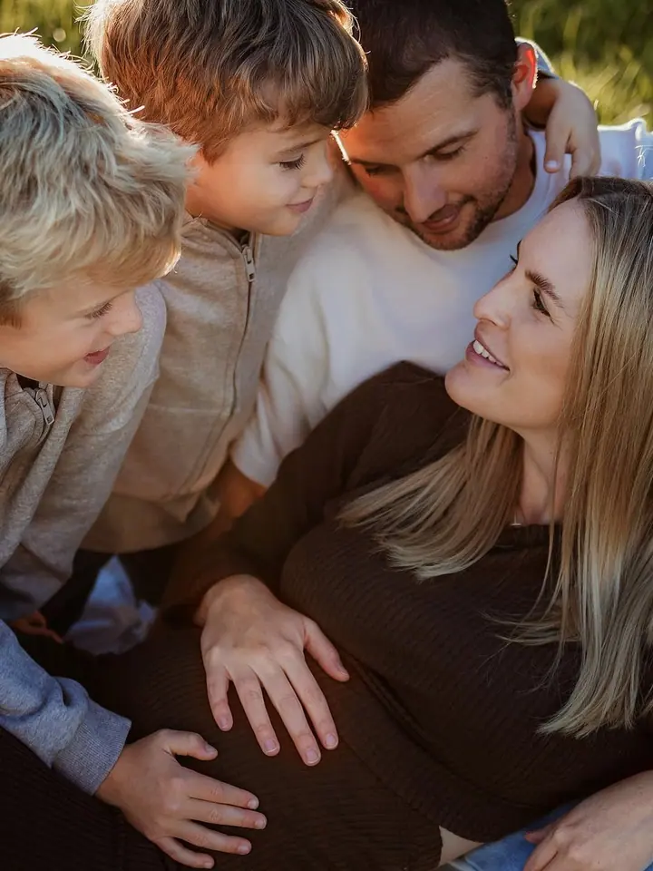

Těhotenské foceníNewbornRodinné focení
Soňa Javorská, Fotografka těhotenství a miminek. Čas, kdy jste byli dva a půl
Fotografka těhotenství a miminek · Chodov, Karlovy Vary, Sokolov. Fotím přirozeně, v klidu a bez spěchu.

Jmenuji se Soňa a fotím těhotenství, miminka a rodiny v Sokolově i všude, kam mě pozvete. Focení beru jako klidné dopoledne, ne jako výkon . Bez spěchu, s pauzou na mazlení i na svačinu .
Focení
S čím vám můžu pomoct
-
Těhotenské focení
Klidné focení venku nebo v ateliéru. Vzpomínka na čas, kdy jste byli dva a půl.
-
Newborn
Miminko v prvních dnech, v teple a bez spěchu. Řídíme se jeho tempem, ne hodinkami.
-
Rodinné focení
Žádné „usmějte se do foťáku“. Hrajeme si, povídáme a já zachycuji, jak to u vás doopravdy vypadá.
Z mých focení
Další fotky na Instagramu @sona.javorska ↗Krok za krokem
Jak focení probíhá
- 1
Napíšete mi
Pár vět o tom, co si představujete, a termín, který se vám hodí. Ozvu se vám zpátky.
- 2
Domluvíme detaily
Místo, čas, oblečení i harmonogram. Pošlu tipy, aby bylo focení v pohodě i pro ty, kdo se před foťákem stydí.
- 3
Focení
V klidu a ve vašem tempu, s pauzami. Program určuje miminko, ne hodinky.
- 4
Hotové fotky
Upravené fotky dostanete v online galerii, v plném rozlišení a připravené ke stažení i tisku.
Fotky, ke kterým se budete vracet ještě za dvacet let.
806lidí sleduje mou práci na Instagramu
650příspěvků s fotkami a příběhy
O mně
Ahoj, jsem Soňa
Na focení si dáváme čas. Miminko i děti určují tempo a já se přizpůsobím. Výsledkem jsou přirozené fotky, na kterých poznáte svou rodinu, ne naaranžované scény z katalogu.
Fotím v Sokolově a v okolí, u vás doma, venku v přírodě i v ateliéru. Předem vám pošlu tipy, co si vzít na sebe a jak se na focení připravit.
Soňa
Otázky
Na co se často ptáte
Kdy je nejlepší čas na newborn focení?
Ideálně do 14 dnů po porodu, kdy miminko hodně spí. Termín proto domlouváme už v těhotenství a po porodu ho jen upřesníme.
V kolikátém týdnu na těhotenské focení?
Nejlépe mezi 28. a 34. týdnem. Bříško je krásně vidět a vy se pořád cítíte dobře.
Co si vzít na sebe?
Předem vám pošlu tipy. Nejlépe fungují jednoduché, světlé a vzájemně ladící barvy bez velkých nápisů.
Co když dítě nebude spolupracovat?
Počkáme. Na focení je dost času na krmení, mazlení i pauzu. Nervózní rodiče jsou na focení častější než nervózní děti.
Rezervace
Pojďme vybrat termín
Napište mi, co plánujete. Na newborn focení se ozvěte ideálně už v těhotenství.
- E-mailmapleri@seznam.cz
- Telefon+420 775 948 057
- Instagram@sona.javorska
- Kde fotímChodov, Karlovy Vary, Sokolov